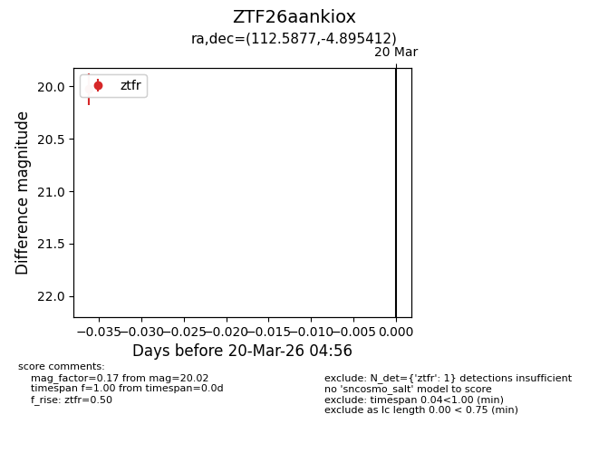
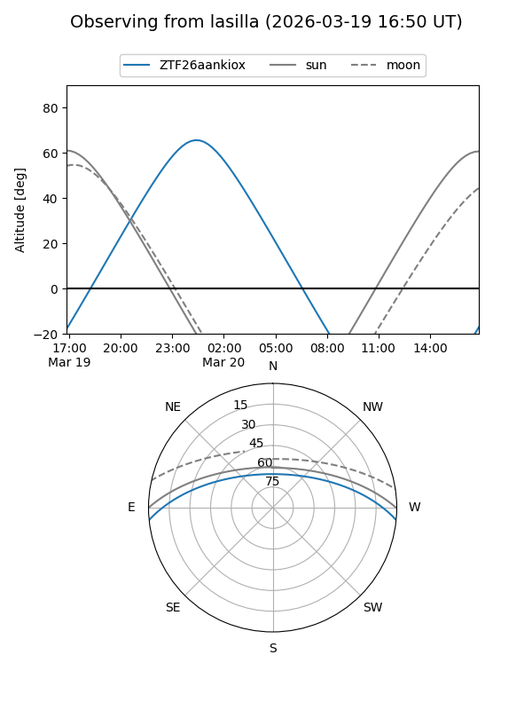
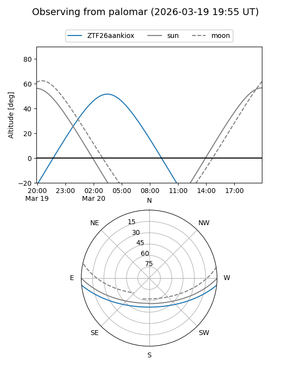
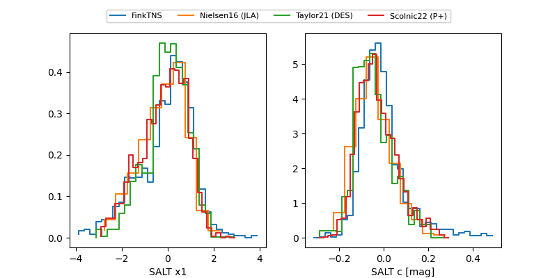

ZTF26aankiox
Target ZTF26aankiox at 2026-03-20 04:58
Aliases and brokers:
FINK: link
Lasair: link
ALeRCE: link
alt names
ZTF26aankiox (ztf,fink_ztf)
Coordinates:
equatorial (ra, dec) = 112.5877,-4.89541
equatorial (HMS+DMS) = 07:30:21.05,-04:53:43.48
galactic (l, b) = (221.7714,+6.36861)
Flags:
Photometry:
last ztfr=20.02
1 ztfr detections
Lightcurve

Visibility


Additional plots
